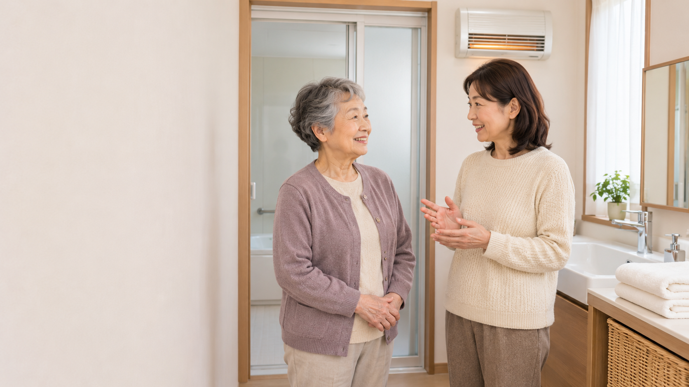

※本サイトはアフィリエイト広告を利用しています。
高齢の親の冬の入浴｜家族で確認したい温度・声かけ・連絡の準備

冬の暮らしを整えることも、これからを安心して過ごすための準備です。新潟県は2026年11月16日、冬場の高齢者の入浴事故への注意喚起を更新しました。この記事はその公的情報を踏まえ、家族の話し合いに使えるメモの作り方を提案します。個別の病状に適した入浴方法は主治医に確認してください。
新潟県の案内を紹介する部分は公的助言に基づく一般情報です。会話例・家族での分担・記録方法・チェックリスト・CTAは編集提案です。
入浴前に環境と体調を確認する
脱衣所と浴室の寒さを確かめる
県は入浴前に脱衣所や浴室を暖めるよう案内しています。暖房設備を使う場合は取扱説明書に従い、水濡れや可燃物との距離にも注意しましょう。家族で「誰が、いつ準備するか」を決めることは編集上の提案です。
湯温と時間の目安を共有する
県が示す一般的な目安は湯温41℃以下、湯につかる時間10分までです。この範囲なら必ず安全という意味ではありません。体調や持病で入浴に不安がある場合は、医療者に確認してください。
本人の希望を聞き、声かけを決める
入る前の一言を習慣にする
県は同居者への入浴前の声かけを勧めています。本人が落ち着いて入浴できるよう、「入る前に教えてもらえる？」など、相談する言い方を選びましょう。
見守り方を一方的に決めない
いつ、どのように様子を確認するかを本人と相談します。扉を急に開けるなど驚かせる対応を避け、普段の希望も聞いておくと話し合いやすくなります。声かけや機器が事故を完全に防ぐとは限りません。
連絡方法と相談したいことを一枚にする
独居の場合は連絡手段を確認する
県は一人暮らしの人について、浴室の扉のそばに携帯電話を置くなどの備えを案内しています。充電や操作方法を本人と確認することを提案します。離れた家族への連絡だけで、緊急時に必ず気づけるとは限りません。
薬や持病の質問は医療者へ
入浴と服薬の時間に不安がある場合は、薬を自己判断で中止・変更せず、医師や薬剤師に質問しましょう。反応がない、呼吸がおかしいなど異常があれば119番へ通報し、指令員の指示に従ってください。
チェックリスト
- 脱衣所・浴室を暖める方法を確認
- 湯温・時間の一般的な目安を共有
- 本人の体調と希望を確認
- 入浴前の声かけと確認方法を相談
- 連絡手段・充電を確認
- 医療者に聞きたいことを記録
よくある質問
Q1. 41℃以下・10分以内なら安全ですか？
安全を保証する条件ではなく一般的な目安です。持病や体調などを踏まえ医療者へ確認してください。
Q2. 心配なので薬を飲む時間を変えてもよいですか？
自己判断で変更せず、処方した医師や薬剤師に相談してください。
Q3. 家族が離れて住んでいる場合は？
本人が使える連絡手段と地域の相談先を確認しましょう。遠隔の連絡だけで常時の安全が確保できるとは限りません。
家族の生活メモに残しましょう
今度話すときに「お風呂の前後で困っていることはある？」と聞いてみませんか。本人の希望と連絡先を、家族の生活メモやエンディングノートに残しておきましょう。
エンディングノートの書き方を読む本人の希望と連絡先を整理する
出典・参考
- 新潟県「冬場、高齢者の入浴中の事故に御注意ください」（2026-11-16更新） — 温め方・41℃以下・10分までの目安・声かけ・連絡手段。公式ページ全文は2026年11月21日に確認。
- 厚生労働省「こんな時は迷わず119へ」 — 救急通報・指令員の指示に従う案内を補足照合（2026年11月21日確認）。
公的助言以外の会話例・記録方法は編集提案。本文や画像の転載なし。
注意事項・人手確認
医療：一般的な目安と個別指示を区別し、事故予防や安全を保証しない。服薬の中止・変更を促さない。救急案内を最新情報と照合。
法務：見守り機器や家族の対応で結果を保証しない。プライバシーと本人の意思に配慮。
税務：暖房・改修の補助や控除は本稿で断定しない。追加時は地域・年度・適用要件を確認。
専門事項には注意事項を併記し一般情報として掲載する。架空の監修やサービスは追加しない。
この記事について
専門家による監修は未実施です。本人の意思とプライバシーを尊重し、見守り機器や家族の対応による結果は保証しません。暖房・改修の補助や税控除の個別適用は判断していません。公開日・最終更新日：2026年11月21日。